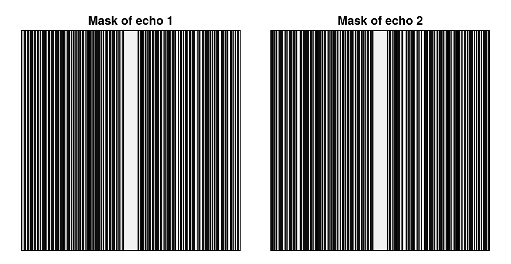
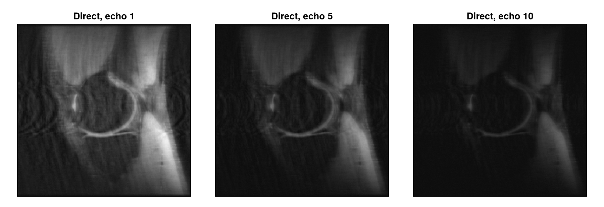
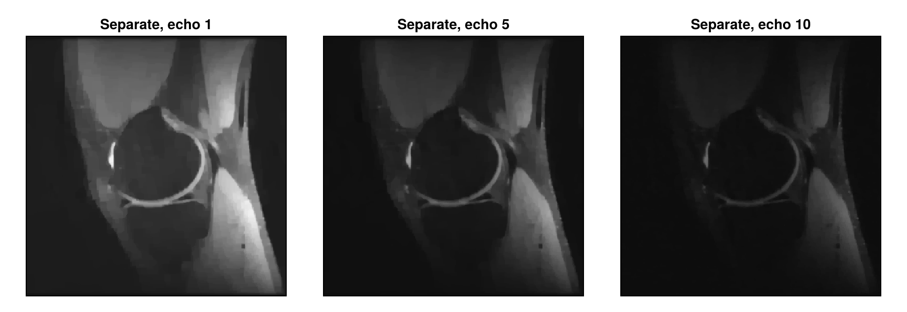
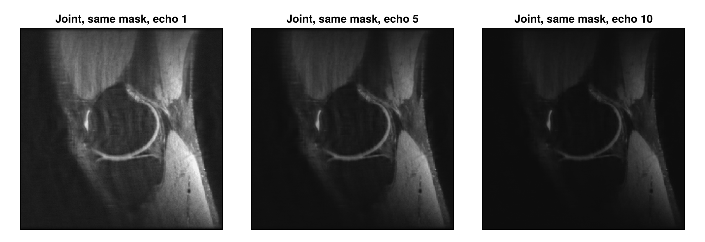
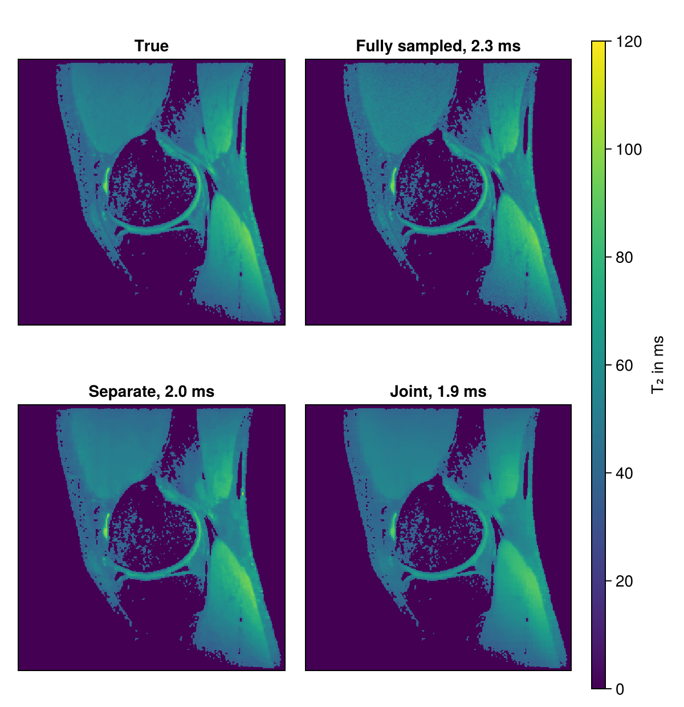

Multi-Echo Reconstruction
A multi-echo spin-echo acquisition measures the same slice at several echo times. The signal decays from echo to echo at a rate that depends on the tissue, so that the series of images reveals the relaxation time $T_2$ of each voxel. The acquisition takes long because it repeats the echo train for every profile, and undersampling shortens it. Since all echo images show the same anatomy, they share much of their information. This tutorial reconstructs undersampled multi-echo data, first each echo on its own and then all echoes jointly with the reconstruction type "multiEcho", and computes $T_2$ maps from the results.
Besides MRIReco, the tutorial needs MRIFiles to read the data, MRISampling to undersample it, Random for reproducible noise and CairoMakie for the plots. The plotting function is the one from Direct Reconstruction, but it also passes keywords on to the heatmap.
using MRIReco, MRIFiles, MRISampling, Random, CairoMakie
function showimages(images, titles; columns = length(images), kwargs...)
fig = Figure(size = (300 * columns, 310 * cld(length(images), columns)))
for (i, (image, title)) in enumerate(zip(images, titles))
ax = Axis(fig[fldmod1(i, columns)...], title = title,
aspect = DataAspect(), yreversed = true)
heatmap!(ax, image'; colormap = :grays, kwargs...)
hidedecorations!(ax)
end
return fig
endCreating the Data
The repository contains no measured multi-echo data, so we create the data from the knee data of Direct Reconstruction. We take its root-sum-of-squares image as the signal $S_0$ at echo time zero and let the signal of each voxel decay exponentially with the echo time $T_E$:
\[S(T_E) = S_0 \, e^{-T_E / T_2}.\]
We first smooth the image slightly to reduce its noise, which would decay with the signal in all echoes and behave like anatomy. The values of $T_2$ are made up: they range from about 20 ms to 100 ms and grow with the image intensity, so that the map has the structures of the anatomy. Real multi-echo data also deviates from this exponential decay, for example through stimulated echoes.
datadir = joinpath(pkgdir(MRIReco), "docs", "src", "examples", "data")
kneeData = AcquisitionData(ISMRMRDFile(joinpath(datadir, "knee_3dFSE_slice170.h5")))
params = Dict{Symbol, Any}()
params[:reco] = "direct"
params[:reconSize] = (320, 320)
kneeImage = sqrt.(sum(abs2, reconstruction(kneeData, params), dims = 5))[:, :, 1, 1, 1, 1]
kernel = [1 2 1; 2 4 2; 1 2 1] / 16f0
kneeImage = sum(kernel[i, j] * circshift(kneeImage, (i - 2, j - 2)) for i in 1:3, j in 1:3)
kneeImage = kneeImage ./ maximum(kneeImage)
trueT2 = 20 .+ 80 .* kneeImage
echoTimes = 10:10:100
echoImages = [kneeImage .* exp.(-TE ./ trueT2) for TE in echoTimes]We look at the echoes 1, 5 and 10 throughout this tutorial. In a common gray scale, the tissue with a short $T_2$ fades first:
shownEchoes = [1, 5, 10]
showimages(echoImages[shownEchoes], ["Echo $e, $(echoTimes[e]) ms" for e in shownEchoes],
colorrange = (0, 0.8))The k-space data follows from the Fourier encoding operator of the knee trajectory, which we use for all echoes. The echo times are not part of the data, because the reconstructions below do not need them. Measured data contains noise, so we add complex Gaussian noise with a total standard deviation of 1 % of the maximum of $S_0$. Noise on the voxels of an image like this corresponds to noise on the k-space samples.
AcquisitionData takes one trajectory per contrast and an array of matrices, one matrix with the dimensions samples and coils for each contrast, slice and repetition. Here, each echo is a contrast, and there is one coil:
tr = trajectory(kneeData, 1)
encodingOp = fourierEncodingOp((320, 320), tr, "fast")
rng = Xoshiro(1234)
noisy(image) = image .+ 0.01f0 .* randn(rng, ComplexF32, size(image))
kdata = [reshape(encodingOp * vec(noisy(image)), :, 1)
for image in echoImages, slice in 1:1, repetition in 1:1]
acqData = AcquisitionData(fill(tr, length(echoTimes)), kdata; encodingSize = (320, 320))
numContrasts(acqData), numChannels(acqData)(10, 1)Undersampling
We keep a third of the profiles of each echo, chosen by Poisson-disk sampling, with the 20 profiles in the center of k-space always included. With its default rand = true, sample_kspace uses a different pattern for each contrast, so the masks of the first two echoes differ outside of the center:
acqDataSub = sample_kspace(acqData, 3.0, "poisson", calsize = 20, seed = 1234)
function samplingMask(data, echo)
mask = zeros(320, 320)
mask[data.subsampleIndices[echo]] .= 1
return mask
end
showimages([samplingMask(acqDataSub, 1), samplingMask(acqDataSub, 2)],
["Mask of echo 1", "Mask of echo 2"])
The echoes are the fourth of the six dimensions of the reconstructed image, so we keep this dimension and compare the result with the true echo images by nrmsd. For comparison, we also reconstruct the fully sampled data. The direct reconstruction of the undersampled data is blurred and shows vertical stripes, because profiles are missing along the horizontal direction:
echoStack(images) = abs.(images[:, :, 1, :, 1, 1])
fullySampledImages = echoStack(reconstruction(acqData, params))
directImages = echoStack(reconstruction(acqDataSub, params))
trueImages = stack(echoImages)
deviation(images) = round(nrmsd(trueImages, images), sigdigits = 2)
showechoes(images, label) = showimages([images[:, :, e] for e in shownEchoes],
["$label, echo $e" for e in shownEchoes],
colorrange = (0, 0.8))
showechoes(directImages, "Direct")
Reconstructing Each Echo on Its Own
The reconstruction type "standard" handles the contrasts independently of each other. We use it with total variation regularization and the solver POGM, an accelerated proximal gradient method. The parameter :rho sets its step size. POGM on its own would use 0.95 here, but the joint reconstruction below needs small steps, so we use 0.05 and more iterations. As in Iterative Reconstruction, we also scale λ with MeasurementBasedNormalization and use more inner iterations for the total variation term than by default. The regularization reduces the stripes, but also smooths fine structures:
totalVariation = TVRegularization(0.1, shape = (320, 320), iterationsTV = 50)
params = Dict{Symbol, Any}()
params[:reco] = "standard"
params[:reconSize] = (320, 320)
params[:solver] = POGM
params[:rho] = 0.05
params[:reg] = totalVariation
params[:normalizeReg] = MeasurementBasedNormalization()
params[:iterations] = 100
separateImages = echoStack(reconstruction(acqDataSub, params))
showechoes(separateImages, "Separate")
Joint Reconstruction
The reconstruction type "multiEcho" treats the images $\mathbf{x}_e$ of all echoes $e$ as one unknown and solves
\[\underset{\mathbf{x}_1, \ldots, \mathbf{x}_{N_e}}{\operatorname{argmin}} \; \frac{1}{2}\sum_{e} \lVert \mathbf{F}_e\mathbf{x}_e - \mathbf{b}_e \rVert_2^2 + \mathrm{R}(\mathbf{x}_1, \ldots, \mathbf{x}_{N_e}),\]
where $\mathbf{F}_e$ applies the Fourier transform, scaled to be unitary, and keeps the samples measured for echo $e$, and $\mathbf{b}_e$ holds these samples with the same scaling. Only a regularization $\mathrm{R}$ that couples the echoes makes this problem different from reconstructing them one by one.
A locally low-rank regularization, as Zhang et al. use it for parameter mapping in a similar form, is such a term. It divides the images into small blocks and forms for each block a matrix with one row per voxel and one column per echo. Nearby voxels mostly belong to the same tissue and decay alike, so that a few singular values describe this matrix well. Noise and artifacts that differ from echo to echo raise the smaller singular values. The regularization therefore penalizes the sum of the singular values in every block, with a weight set by λ. We use blocks of $8 \times 8$ voxels, the final block size of Zhang et al. Like their changing partition of the images, the random shift of the blocks in every iteration, which LLRRegularization applies by default, avoids a block pattern in the result, as long as the steps are small. With params[:rho] = 0.95, the last iteration would leave such a pattern in the $T_2$ map below. The random shift also lets the result vary slightly from one reconstruction to the next:
params[:reco] = "multiEcho"
params[:reg] = LLRRegularization(0.5, shape = (320, 320), blockSize = (8, 8))
jointImages = echoStack(reconstruction(acqDataSub, params))
showechoes(jointImages, "Joint")The stripes are almost gone and fine structures stay sharp, and the deviation from the true echo images drops clearly. Over all echoes, the joint reconstruction deviates about as little as the direct reconstruction of the fully sampled data:
(direct = deviation(directImages), separate = deviation(separateImages),
joint = deviation(jointImages), fullySampled = deviation(fullySampledImages))(direct = 0.029, separate = 0.014, joint = 0.0065, fullySampled = 0.0078)Compared with the fully sampled data, it deviates more at the first echoes and less at the late ones, where it also suppresses noise. For both iterative reconstructions, we chose λ by comparing a few values with the true echo images and the true $T_2$ map, which is not possible with measured data. The gain also depends on the data. Here, the decay is exactly exponential, $T_2$ follows the anatomy, and there is neither phase nor motion between the echoes. This favors the low-rank model, so measured data may gain less.
The Role of the Sampling Masks
In the echo images, the gain also depends strongly on the sampling masks. With rand = false, all echoes share one sampling mask. The artifacts then have nearly the same structure in all echoes and stay in the largest singular values, so that the regularization removes much less of them:
acqDataSameMask = sample_kspace(acqData, 3.0, "poisson", calsize = 20, seed = 1234,
rand = false)
jointSameMask = echoStack(reconstruction(acqDataSameMask, params))
showechoes(jointSameMask, "Joint, same mask")
The separate reconstructions, in contrast, do not depend on differences between the masks. With one mask for all echoes, they deviate less than the joint reconstruction:
params[:reco] = "standard"
params[:reg] = totalVariation
separateSameMask = echoStack(reconstruction(acqDataSameMask, params))
(joint = deviation(jointSameMask), separate = deviation(separateSameMask))(joint = 0.018, separate = 0.014)A conventional multi-echo spin-echo sequence uses the same phase encoding for all echoes of a train, which corresponds to rand = false. Different masks require a sequence that changes the phase encoding from echo to echo. Zhang et al. undersampled their data retrospectively.
Computing T₂ Maps
Often, the echo images are only a means to obtain the $T_2$ map. Taking the logarithm of the signal model gives a linear model, $\log S(T_E) = \log S_0 - T_E / T_2$, which we fit for all voxels at once by least squares. Since the fit is only meaningful where there is signal, we keep the voxels with more than 20 % of the maximum intensity. The titles show the mean absolute error of the maps:
function fitT2(images)
A = [ones(length(echoTimes)) -echoTimes]
coefficients = A \ reshape(log.(max.(images, eps(Float32))), :, length(echoTimes))'
return reshape(1 ./ coefficients[2, :], 320, 320)
end
tissue = kneeImage .> 0.2
meanError(t2) = round(sum(abs, t2[tissue] .- trueT2[tissue]) / count(tissue), digits = 1)
maps = fitT2.([fullySampledImages, separateImages, jointImages])
labels = ["Fully sampled", "Separate", "Joint"]
titles = ["$label, $(meanError(t2)) ms" for (label, t2) in zip(labels, maps)]
fig = showimages([t2 .* tissue for t2 in [trueT2, maps...]], ["True", titles...],
columns = 2, colormap = :viridis, colorrange = (0, 120))
Colorbar(fig[:, 3], colormap = :viridis, limits = (0, 120), label = "T₂ in ms")
fig
The fully sampled map shows the error that the noise alone causes. From a third of the samples, both iterative reconstructions reach about the same error. At this noise level, the gain of the joint reconstruction in the echo images does not carry over to the $T_2$ map. With less noise and a smaller λ, its map also becomes the better one.
Next Steps
- Subspace Reconstruction exploits the same redundancy with a fixed temporal basis and several coils.
- With several coils,
"multiEcho"reconstructs the echo images of each coil separately, while"multiCoilMultiEcho"reconstructs one image per echo from all coils. - The RegularizedLeastSquares.jl documentation describes the available solvers and regularization terms.
- The API reference describes
reconstructionandsample_kspace.
This page was generated using Literate.jl.